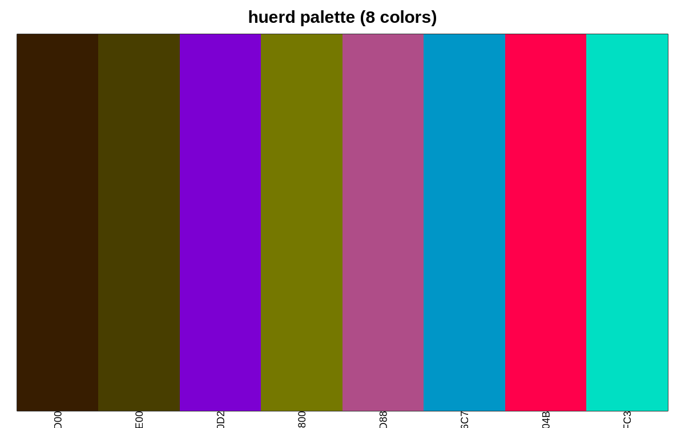
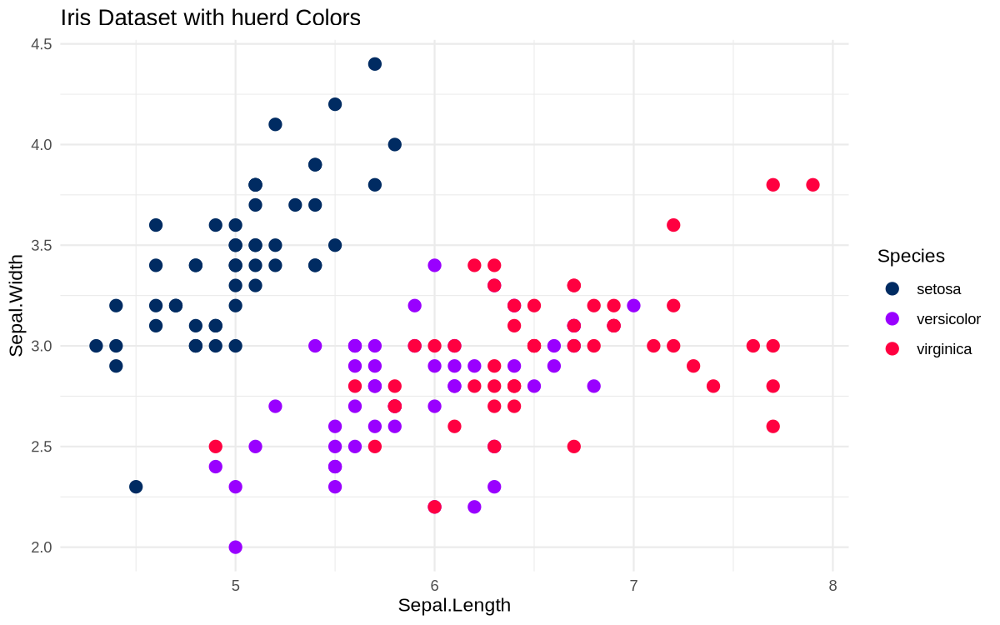
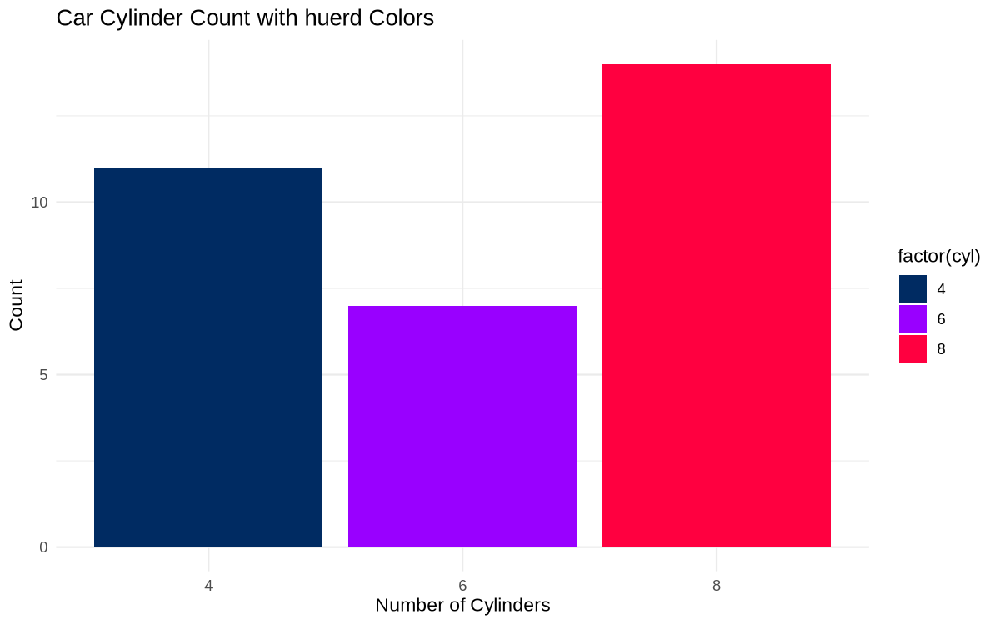
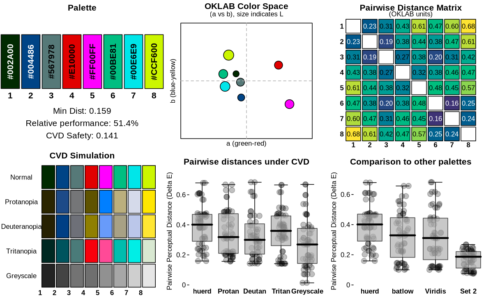
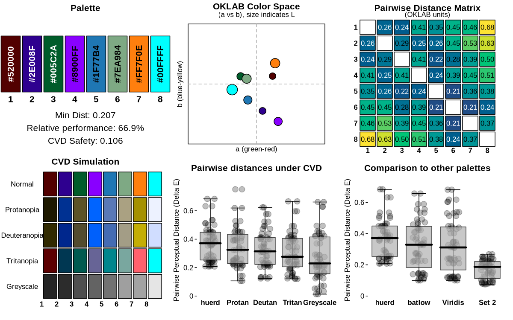

A discrete color palette generator with support for fixed colors, optimized for color vision deficient viewers. Features different optimization algorithms and a multi-objective optimization framework for advanced color palette generation.
Installation
You can install the development version of huerd from GitHub with:
# install.packages("pak")
pak::pak("sims1253/huerd")Basic Usage
Generate a palette with 8 colors using either the standard or quick method:
library(huerd)
set.seed(42)
# Standard generation with full control
palette <- generate_palette(8, progress = FALSE)
print(palette)
#>
#> -- huerd Color Palette (8 colors) --
#> Colors:
#> [ 1] #371D00
#> [ 2] #483E00
#> [ 3] #7C00D2
#> [ 4] #757800
#> [ 5] #AF4D88
#> [ 6] #0096C7
#> [ 7] #FF004B
#> [ 8] #00DFC3
#>
#> -- Quality Metrics Summary --
#> * Min. Perceptual Distance (OKLAB): 0.111
#> * Optimizer Performance Ratio : 35.9%
#> * Min. CVD-Safe Distance (OKLAB) : 0.096
#>
#> -- Generation Details --
#> * Optimizer Iterations: 693
#> * Optimizer Status: NLOPT_XTOL_REACHED: Optimization stopped because xtol_rel or xtol_abs (above) was reached.
# Quick generation for immediate use
quick_palette <- quick_palette(8)
print(quick_palette)
#>
#> -- huerd Color Palette (8 colors) --
#> Colors:
#> [ 1] #003C00
#> [ 2] #740084
#> [ 3] #5320F5
#> [ 4] #FF0000
#> [ 5] #00CB99
#> [ 6] #FF5EFF
#> [ 7] #00F8FF
#> [ 8] #FFDE51
#>
#> -- Quality Metrics Summary --
#> * Min. Perceptual Distance (OKLAB): 0.163
#> * Optimizer Performance Ratio : 52.7%
#> * Min. CVD-Safe Distance (OKLAB) : 0.144
#>
#> -- Generation Details --
#> * Optimizer Iterations: 623
#> * Optimizer Status: NLOPT_XTOL_REACHED: Optimization stopped because xtol_rel or xtol_abs (above) was reached.Visualize your palette:
library(huerd)
set.seed(42)
palette <- generate_palette(8, progress = FALSE)
plot(palette, type = "swatches")
ggplot2 Integration
Use huerd palettes directly in your ggplot2 visualizations:
library(ggplot2)
library(huerd)
# Create a huerd palette
set.seed(42)
huerd_colors <- generate_palette(5, progress = FALSE)
# Example with iris data using scale_color_huerd()
ggplot(iris, aes(x = Sepal.Length, y = Sepal.Width, color = Species)) +
geom_point(size = 3) +
scale_color_huerd(palette = huerd_colors) +
theme_minimal() +
labs(title = "Iris Dataset with huerd Colors")
# Example with mtcars data using scale_fill_huerd()
ggplot(mtcars, aes(x = factor(cyl), fill = factor(cyl))) +
geom_bar() +
scale_fill_huerd(palette = huerd_colors) +
theme_minimal() +
labs(title = "Car Cylinder Count with huerd Colors",
x = "Number of Cylinders", y = "Count")
Convenience Functions
Access pre-made palettes and export options for different workflows:
library(huerd)
# Get a quick palette without generation
quick_colors <- quick_palette(6)
print(quick_colors)
#>
#> -- huerd Color Palette (6 colors) --
#> Colors:
#> [ 1] #4B0000
#> [ 2] #00718B
#> [ 3] #C10000
#> [ 4] #FF00FF
#> [ 5] #FAB800
#> [ 6] #00FFFF
#>
#> -- Quality Metrics Summary --
#> * Min. Perceptual Distance (OKLAB): 0.270
#> * Optimizer Performance Ratio : 73.9%
#> * Min. CVD-Safe Distance (OKLAB) : 0.178
#>
#> -- Generation Details --
#> * Optimizer Iterations: 596
#> * Optimizer Status: NLOPT_XTOL_REACHED: Optimization stopped because xtol_rel or xtol_abs (above) was reached.
# Access the default brand palette
brand_colors <- brand_palette(c("#003366", "#FF6600"), n_total = 6)
print(brand_colors)
#>
#> -- huerd Color Palette (6 colors) --
#> Colors:
#> [ 1] #003366
#> [ 2] #854700
#> [ 3] #006D91
#> [ 4] #AE7BFB
#> [ 5] #FF6600
#> [ 6] #A1EB9F
#>
#> -- Quality Metrics Summary --
#> * Min. Perceptual Distance (OKLAB): 0.182
#> * Optimizer Performance Ratio : 49.9%
#> * Min. CVD-Safe Distance (OKLAB) : 0.180
#>
#> -- Generation Details --
#> * Optimizer Iterations: 276
#> * Optimizer Status: NLOPT_XTOL_REACHED: Optimization stopped because xtol_rel or xtol_abs (above) was reached.
# Export palette in different formats for web development
color_names <- paste0("color_", seq_along(quick_colors))
css_output <- export_palette(quick_colors, format = "css", names = color_names)
cat("CSS Output:\n", css_output, "\n\n")
#> CSS Output:
#> :root {
#> --color_1: #4B0000;
#> --color_2: #00718B;
#> --color_3: #C10000;
#> --color_4: #FF00FF;
#> --color_5: #FAB800;
#> --color_6: #00FFFF;
#> }
sass_output <- export_palette(quick_colors, format = "sass", names = color_names)
cat("Sass Output:\n", sass_output, "\n\n")
#> Sass Output:
#> $color_1: #4B0000;
#> $color_2: #00718B;
#> $color_3: #C10000;
#> $color_4: #FF00FF;
#> $color_5: #FAB800;
#> $color_6: #00FFFF;
json_output <- export_palette(quick_colors, format = "json", names = color_names)
cat("JSON Output:\n", json_output, "\n")
#> JSON Output:
#> {
#> "color_1": "#4B0000",
#> "color_2": "#00718B",
#> "color_3": "#C10000",
#> "color_4": "#FF00FF",
#> "color_5": "#FAB800",
#> "color_6": "#00FFFF"
#> }
# Interpret palette quality metrics
quality_info <- interpret_palette_quality(quick_colors)
print(quality_info)
#>
#> ── Palette Quality Assessment ──
#>
#> This 6-color palette is highly optimized (74% of theoretical maximum).
#> Excellent - colors are highly distinct and easy to differentiate
#>
#> ── Distinctness
#> Excellent - colors are highly distinct and easy to differentiate
#>
#> ── Accessibility
#> Excellent - palette is safe for most color vision deficienciesConstrained Color Palettes
Include specific colors while optimizing the remaining colors:
library(huerd)
set.seed(123)
palette <- generate_palette(
n = 8,
include_colors = c("#4A6B8A", "#E5A04C"),
progress = FALSE
)
print(palette)
#>
#> -- huerd Color Palette (8 colors) --
#> Colors:
#> [ 1] #1B1000
#> [ 2] #5F4151
#> [ 3] #4A6B8A
#> [ 4] #EA0000
#> [ 5] #008ED7
#> [ 6] #FF00CB
#> [ 7] #E5A04C
#> [ 8] #FCADFF
#>
#> -- Quality Metrics Summary --
#> * Min. Perceptual Distance (OKLAB): 0.131
#> * Optimizer Performance Ratio : 42.4%
#> * Min. CVD-Safe Distance (OKLAB) : 0.101
#>
#> -- Generation Details --
#> * Optimizer Iterations: 370
#> * Optimizer Status: NLOPT_XTOL_REACHED: Optimization stopped because xtol_rel or xtol_abs (above) was reached.Multi-Optimizer Support
Choose from 5 different optimization algorithms based on your needs:
library(huerd)
set.seed(456)
# COBYLA: Default deterministic optimizer for general use
cobyla_palette <- generate_palette(6, optimizer = "nloptr_cobyla", progress = FALSE)
# SANN: Stochastic simulated annealing for higher quality
sann_palette <- generate_palette(6, optimizer = "sann", progress = FALSE)
# DIRECT: Global optimization for reproducibility (may need tuning)
direct_palette <- generate_palette(6, optimizer = "nlopt_direct", progress = FALSE)
# Nelder-Mead: Derivative-free local optimization
# As an alternative deterministic approach
neldermead_palette <- generate_palette(6, optimizer = "nlopt_neldermead", progress = FALSE)
# L-BFGS: Gradient-based optimization for smooth objectives (v0.5.0+)
lbfgs_palette <- generate_palette(6, optimizer = "nlopt_lbfgs",
weights = c(smooth_repulsion = 1), progress = FALSE)
cat("COBYLA:", paste(cobyla_palette, collapse = ", "), "\n")
#> COBYLA: #100405, #960081, #008700, #FF2BBD, #00C700, #00FFFF
cat("SANN:", paste(sann_palette, collapse = ", "), "\n")
#> SANN: #000C02, #770000, #B20070, #FF0000, #FFB5FF, #A8FF00
cat("DIRECT:", paste(direct_palette, collapse = ", "), "\n")
#> DIRECT: #636363, #636363, #636363, #636363, #636363, #636363
cat("Nelder-Mead:", paste(neldermead_palette, collapse = ", "), "\n")
#> Nelder-Mead: #2F00E4, #0089A1, #FF0000, #FF48FF, #00C99E, #00FCFF
cat("L-BFGS:", paste(lbfgs_palette, collapse = ", "), "\n")
#> L-BFGS: #003700, #2E0079, #000092, #FF0000, #FF00FF, #00FFFFMulti-Objective Framework
The package includes a multi-objective optimization framework with both discrete and smooth optimization support:
library(huerd)
set.seed(789)
# Discrete distance optimization (default)
distance_palette <- generate_palette(
n = 6,
weights = c(distance = 1), # Explicit distance weighting
optimizer = "nloptr_cobyla",
progress = FALSE
)
# Smooth optimization for faster convergence (v0.5.0+)
smooth_palette <- generate_palette(
n = 8,
weights = c(smooth_repulsion = 1), # Smooth repulsion objective
optimizer = "nlopt_lbfgs", # L-BFGS for gradient-based optimization
progress = FALSE
)
# Alternative smooth objective using log-sum-exp
logsumexp_palette <- generate_palette(
n = 6,
weights = c(smooth_logsumexp = 1),
optimizer = "nlopt_lbfgs",
progress = FALSE
)
# Compare optimization results
cat("Distance-based palette:\n")
#> Distance-based palette:
print(distance_palette)
#>
#> -- huerd Color Palette (6 colors) --
#> Colors:
#> [ 1] #002B00
#> [ 2] #9B0000
#> [ 3] #C80000
#> [ 4] #FF0000
#> [ 5] #0095FF
#> [ 6] #00DDC2
#>
#> -- Quality Metrics Summary --
#> * Min. Perceptual Distance (OKLAB): 0.097
#> * Optimizer Performance Ratio : 26.6%
#> * Min. CVD-Safe Distance (OKLAB) : 0.067
#>
#> -- Generation Details --
#> * Optimizer Iterations: 407
#> * Optimizer Status: NLOPT_XTOL_REACHED: Optimization stopped because xtol_rel or xtol_abs (above) was reached.
cat("\nSmooth repulsion palette:\n")
#>
#> Smooth repulsion palette:
print(smooth_palette)
#>
#> -- huerd Color Palette (8 colors) --
#> Colors:
#> [ 1] #003700
#> [ 2] #2E0079
#> [ 3] #000092
#> [ 4] #2A3700
#> [ 5] #FF0000
#> [ 6] #FF00FF
#> [ 7] #00FF00
#> [ 8] #00FFFF
#>
#> -- Quality Metrics Summary --
#> * Min. Perceptual Distance (OKLAB): 0.043
#> * Optimizer Performance Ratio : 13.9%
#> * Min. CVD-Safe Distance (OKLAB) : 0.012
#>
#> -- Generation Details --
#> * Optimizer Iterations: 28
#> * Optimizer Status: NLOPT_SUCCESS: Generic success return value.
cat("\nLog-sum-exp palette:\n")
#>
#> Log-sum-exp palette:
print(logsumexp_palette)
#>
#> -- huerd Color Palette (6 colors) --
#> Colors:
#> [ 1] #003700
#> [ 2] #000092
#> [ 3] #AD00FF
#> [ 4] #FF0000
#> [ 5] #00FF00
#> [ 6] #00FFFF
#>
#> -- Quality Metrics Summary --
#> * Min. Perceptual Distance (OKLAB): 0.238
#> * Optimizer Performance Ratio : 65.1%
#> * Min. CVD-Safe Distance (OKLAB) : 0.050
#>
#> -- Generation Details --
#> * Optimizer Iterations: 28
#> * Optimizer Status: NLOPT_SUCCESS: Generic success return value.Diagnostic Dashboard
Get a quick overview of your palette properties:
library(huerd)
set.seed(2024)
palette <- generate_palette(8, progress = FALSE)
plot_palette_analysis(palette, force_font_scale = 0.6)
Palette Quality Evaluation
Or look at the numerical evaluation results:
library(huerd)
set.seed(314)
palette <- generate_palette(8, progress = FALSE)
evaluation <- evaluate_palette(palette)
# Access raw metrics (no subjective scoring)
cat("Minimum distance:", evaluation$distances$min, "\n")
#> Minimum distance: 0.139767
cat("Performance ratio:", evaluation$distances$performance_ratio * 100, "%\n")
#> Performance ratio: 45.10603 %
cat("CVD worst case:", evaluation$cvd_safety$worst_case_min_distance, "\n")
#> CVD worst case: 0.1112826Custom Parameters
Fine-tune the generation process with advanced options:
library(huerd)
set.seed(271)
palette <- generate_palette(
n = 8,
initialization = "harmony", # Color harmony-based initialization
init_lightness_bounds = c(0.3, 0.8), # Constrain lightness range
max_iterations = 2000, # Increased iterations
optimizer = "nloptr_cobyla", # Use COBYLA for optimization
progress = FALSE
)
print(palette)
#>
#> -- huerd Color Palette (8 colors) --
#> Colors:
#> [ 1] #AB5445
#> [ 2] #AC7D3B
#> [ 3] #8FA800
#> [ 4] #C0BC00
#> [ 5] #FF93D2
#> [ 6] #B2B8FF
#> [ 7] #4CDF9C
#> [ 8] #59FDE7
#>
#> -- Quality Metrics Summary --
#> * Min. Perceptual Distance (OKLAB): 0.092
#> * Optimizer Performance Ratio : 29.6%
#> * Min. CVD-Safe Distance (OKLAB) : 0.072
#>
#> -- Generation Details --
#> * Optimizer Iterations: 753
#> * Optimizer Status: NLOPT_XTOL_REACHED: Optimization stopped because xtol_rel or xtol_abs (above) was reached.Complete Workflow Example
library(huerd)
set.seed(161)
# 1. Generate brand palette with advanced optimization
my_brand_palette <- generate_palette(
n = 8,
include_colors = c("#1f77b4", "#ff7f0e"), # Fixed brand colors
fixed_aesthetic_influence = 0.9,
initialization = "harmony",
optimizer = "sann",
max_iterations = 5000,
weights = c(distance = 1),
return_metrics = TRUE,
progress = TRUE
)
#> ℹ Preparing for palette generation...
#> ℹ Adapting initialization from fixed colors' aesthetics...
#> Initializing 6 free colors (method: harmony)...
#> Optimizing 6 free colors using sann...
#> ℹ Finalizing palette...
#>
#> ✔ Done
# 2. Diagnostic analysis
plot_palette_analysis(my_brand_palette, force_font_scale = 0.6)
# 3. Quality evaluation
evaluation <- evaluate_palette(my_brand_palette)
cat("Min distance:", round(evaluation$distances$min, 3), "\n")
#> Min distance: 0.207
cat("Performance:", round(evaluation$distances$performance_ratio * 100, 1), "%\n")
#> Performance: 66.9 %
# 4. CVD accessibility check
cvd_safe <- is_cvd_safe(my_brand_palette)
if (cvd_safe) {
cat("Palette is CVD-accessible\n")
} else {
cat("Palette may challenge CVD viewers\n")
}
#> Palette is CVD-accessible
# 5. CVD simulation for verification
cvd_simulation <- simulate_palette_cvd(my_brand_palette, cvd_type = "all")
print(cvd_simulation)
#>
#> -- huerd CVD Simulation Result (Multiple Types, Severity: 1.00) --
#> Palette for: original
#> [ 1] #520000
#> [ 2] #2E008F
#> [ 3] #005C2A
#> [ 4] #8900FF
#> [ 5] #1F77B4
#> [ 6] #7EA984
#> [ 7] #FF7F0E
#> [ 8] #00FFFF
#> Palette for: protan
#> [ 1] #1E1900
#> [ 2] #003192
#> [ 3] #5C5326
#> [ 4] #0064FF
#> [ 5] #5A79B7
#> [ 6] #AAA182
#> [ 7] #A59100
#> [ 8] #EDF2FF
#> Palette for: deutan
#> [ 1] #312A00
#> [ 2] #00278D
#> [ 3] #534C2E
#> [ 4] #0060FB
#> [ 5] #456CB3
#> [ 6] #A39D86
#> [ 7] #C4AE05
#> [ 8] #D0DDFF
#> Palette for: tritan
#> [ 1] #5C0001
#> [ 2] #003752
#> [ 3] #005A50
#> [ 4] #676496
#> [ 5] #00868D
#> [ 6] #79A79F
#> [ 7] #FF616D
#> [ 8] #00FFFE
# 6. Display final palette (colors are brightness-sorted)
print(my_brand_palette)
#>
#> -- huerd Color Palette (8 colors) --
#> Colors:
#> [ 1] #520000
#> [ 2] #2E008F
#> [ 3] #005C2A
#> [ 4] #8900FF
#> [ 5] #1F77B4
#> [ 6] #7EA984
#> [ 7] #FF7F0E
#> [ 8] #00FFFF
#>
#> -- Quality Metrics Summary --
#> * Min. Perceptual Distance (OKLAB): 0.207
#> * Optimizer Performance Ratio : 66.9%
#> * Min. CVD-Safe Distance (OKLAB) : 0.106
#>
#> -- Generation Details --
#> * Optimizer Iterations: 5000
#> * Optimizer Status: Optimization convergedWorkflow Guides
The huerd package includes comprehensive vignettes for different user needs:
Data Scientist Workflow: Create accessible dashboard visualizations with optimized color schemes for color vision deficient viewers.
Designer Workflow: Integrate brand colors into cohesive palettes and export them in various formats (CSS, Sass, JSON) for web development.
Package Developer Workflow: Use the programmatic API for reproducible palette generation and integrate huerd into your own packages or applications.